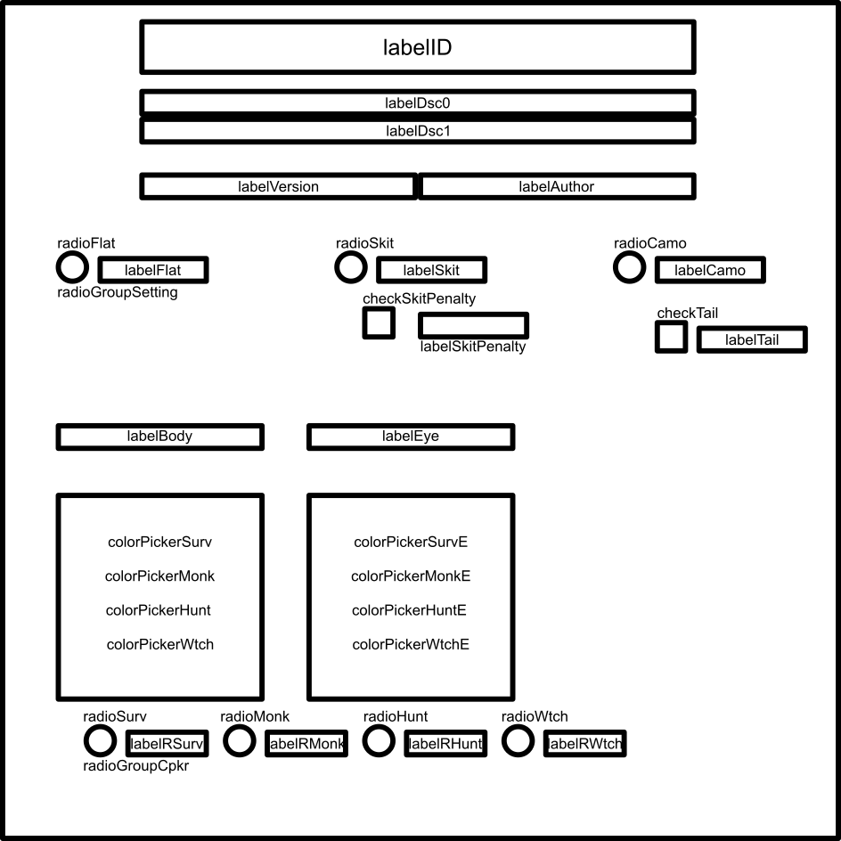
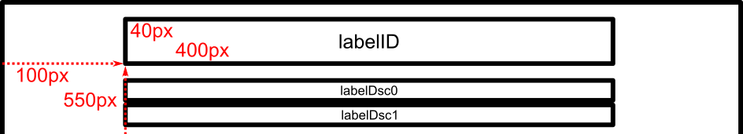
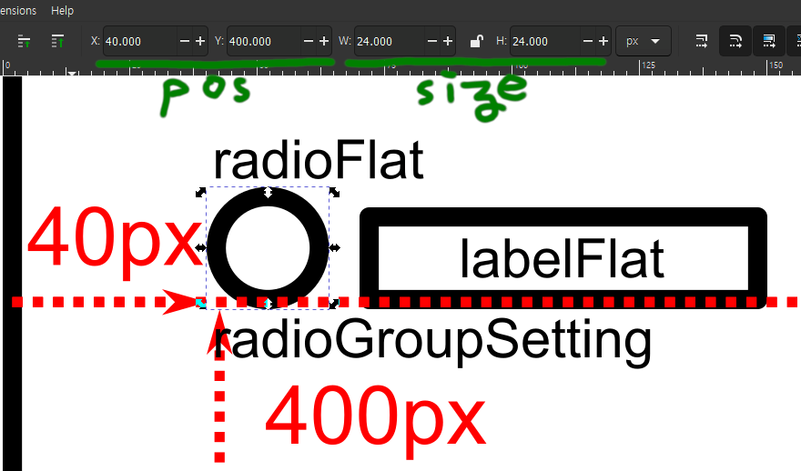

To interact with Config Machine, it is best to have a child class of OptionInterface.
This means your mod will be dependent with Config Machine.
First download Config Machine from RainDB,
extract the zip and put both dll and xml in the folder where you store References.
Then add ConfigMachine.dll to References of your mod project.
Create a new cs file and make a class inheriting OptionInterface.
public class MyOI : OptionInterface
{
public MyOI() : base (plugin: MyPlugin.instance) // Your BaseUnityPlugin instance
{ }
}
Now add LoadOI static method in your BaseUnityPlugin class that returns your OptionInterface.
public static OptionInterface LoadOI() => return new MyOI();
For designing your GUI, using Inkscape is strongly suggested. With Inkscape, create a file with 600 x 600 pixel, then enable [View] - [Canvas Orientation] - [Flip Vertically]. (Alternatively, you can use any CAD program which has up and right as positive axis by default)
The image below is a diagram of Colorfoot's first OpTab.

All UIelements have bottom-left position and rectangular size.
(Some have fixedSize which you can see from the summary of their constructors)
Think every element like rectangles, and arrange them as you need.
(Circular UIelements have rad instead; You can consider them as a square with 2 * rad for its dimensions)

For pos parameters, use the relative coordinate from bottom-left from the canvas to your item.
For size parameters, use their size in pixel.
If you're using Inkscape with [Flip Vertically] setting on, you can get those from their properties without any calculation.

Here are some tips for designing GUI:
OpRect to surround them.OpTab. If the canvas gets crowded, disperse your items for easier readability.OpScrollBoxs to store many things in one place even if that's an option: The users cannot see everything in a single screen which reduces usability greatly.OptionInterface.Initialize is called in IntroRoll(for loading configuration) and ConfigMenu(for displaying to users).
You can check whether Initialize is called in ConfigMenu or not with OptionInterface.isOptionMenu.
It usually goes like this following example:
public override void Initialize()
{
base.Initialize(); // This should be called before everything else
Tabs = new OpTab[2]; // The number of OpTab must be 1 ~ 20
Tabs[0] = new OpTab("Main"); // Each OpTab is 600 x 600 pixel sized canvas
Tabs[1] = new OpTab("Second")
{ color = Color.cyan }; // You can change its button and canvas colour too
// After Initializing Tabs, create UIelements
}
Now initialize UIelements and add them to OpTab (or OpScrollBox).
The Z-order (the order in which they're drawn) of UIelements is the order of constructors, not the order they're added to OpTab.
Tabs[0].AddItems(new OpLabel(100f, 500f, "My Text")
{ description = "This is My Text" });
// Any UIelement can have description, which will be shown
// at the bottom of the screen when the mouse cursor is over
UIconfigs are a subcategory of UIelement which have key and value, both of them get saved automatically by Config Machine.
Their constructor accepts key and defaultValue besides.
key must be exclusive and unique unless it is cosmetic.
Setting the key to empty or anything that starts with _(underbar) will turn it cosmetic, and won't be saved.
Cosmetic UIconfig is useful when you want to have provided UIconfig for UI purpose but not for an actual configurable.
(Similarly, ModID that starts with _ will be completely ignored by Config Machine)
OpCheckBox chkExample = new OpCheckBox(260f, 360f, "Example", true);
Tabs[0].AddItems(chkExample,
new OpLabel(260f, 390f, "Enable Example") { bumpBehav = chkExample.bumpBehav });
// BumpBehaviour is Config Machine's custom class that allows smoothly animated reaction with the input
// Setting OpLabel's bumpBehav to other UIconfig/UItrigger's bumpBehav allows it to highlight with that element
UItriggers are the other subcategory of UIelement which have signal.
When the user activates an UItrigger in some way, it will call the Signal function in OptionInterface which will be explained later.
Tabs[0].AddItems(new OpSimpleButton(new Vector2(400f, 200f), new Vector2(100f, 24f), "press", "Press Me"));
Update function is called every frame when the game is in ConfigMenu, and this OptionInterface is currently active
(The user has currently selected this mod from the list on left).
This is useful to make reactive GUI, especially since each UIconfig instance can have only one value saved.
The following example code uses cosmetic OpRadioButtonGroup to have four OpColorPickers in a single spot.
private OpRadioButtonGroup rbgSelect;
private int select;
private OpColorPicker[] cpkPlayers;
public override void Initialize()
{
base.Initialize();
Tabs = new OpTab[] { new OpTab() };
select = 0;
rbgSelect = new OpRadioButtonGroup("_", select);
Tabs[0].AddItems(rbgSelect);
rbgSelect.SetButtons(new OpRadioButton[]
{
new OpRadioButton(50f, 100f){ description = "The Survivor"},
new OpRadioButton(100f, 100f){ description = "The Monk"},
new OpRadioButton(150f, 100f){ description = "The Hunter"},
new OpRadioButton(200f, 100f){ description = "The Nightcat"}
}
);
OpColorPicker[] cpkPlayers = new OpColorPicker[4];
for (int i = 0; i < 4; i++)
{
Tabs[0].AddItems(new OpLabel(50f * i, 70f, rbgSelect.buttons[i].description) { bumpBehav = rbgSelect.buttons[i].bumpBehav });
cpkPlayers[i] = new OpColorPicker(new Vector2(100f, 300f), $"Color{i}", "FFFFFF");
cpkPlayers[i].Hide();
}
cpkPlayers[select].Show();
Tabs[0].AddItems(cpkPlayers);
}
public override void Update(float dt)
{
base.Update(dt); // dt is deltaTime
if (select != rbgSelect.valueInt)
{
for (int i = 0; i < cpkPlayers.Length; i++) { cpkPlayers[i].Hide(); }
select = rbgSelect.valueInt;
cpkPlayers[select].Show();
}
}
ConfigOnChange is called whenever config Dictionary is updated,
mainly when Config Machine loads OptionInterfaces in IntroRoll,
and when the user saves changes of configuration in ConfigMenu.
Override this function to grab your configurable values.
config Dictionary is where UIconfig's value is stored.
The following is an example of how to convert a string value to the corresponding type.
public override void ConfigOnChange()
{
base.ConfigOnChange();
MyMod.config.myInt = int.Parse(config["keyInt"]);
MyMod.config.myFloat = float.Parse(config["keyFloat"]);
MyMod.config.myKey = OpKeyBinder.StringToKeyCode(config["keyKey"]);
MyMod.config.myColor = OpColorPicker.HexToColor(config["keyColor"]);
}
Signal is called when the user has interacted with UItrigger.
Override this for reaction to that.
public override void Signal(UItrigger trigger, string signal)
{
switch (signal)
{
case "reset":
ConfigMenu.ResetCurrentConfig(); // This is the same as pressing Reset Config Button.
break;
}
}
That's about the basics on how to use OptionInterface. For farther detail about provided UIelements or Translation API, continue reading those pages.